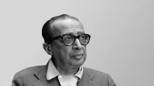
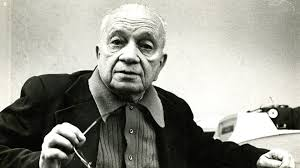

Carlos Drummond de Andrade
Um dos maiores poetas brasileiros, conhecido por sua obra intimista e reflexiva, como "No Meio do Caminho".
Saiba mais

Manuel Bandeira
Poeta simbolista e modernista, suas obras abordam temas do cotidiano e da simplicidade, como em "Vou-me Embora pra Pasárgada".
Saiba mais
Vinicius de Moraes
Conhecido como "O Poetinha", Vinicius é famoso por sua poesia romântica e como letrista da Bossa Nova.
Saiba mais
Machado de Assis
Considerado um dos maiores escritores brasileiros, Machado trouxe análises profundas da sociedade em suas obras.
Saiba mais

Mario Quintana
Poeta gaúcho, conhecido por suas reflexões sobre a vida, o tempo e o amor, com uma linguagem simples e acessível.
Saiba mais
Castro Alves
Poeta romântico, conhecido como "O Poeta dos Escravos" por sua obra dedicada à abolição da escravatura.
Saiba mais